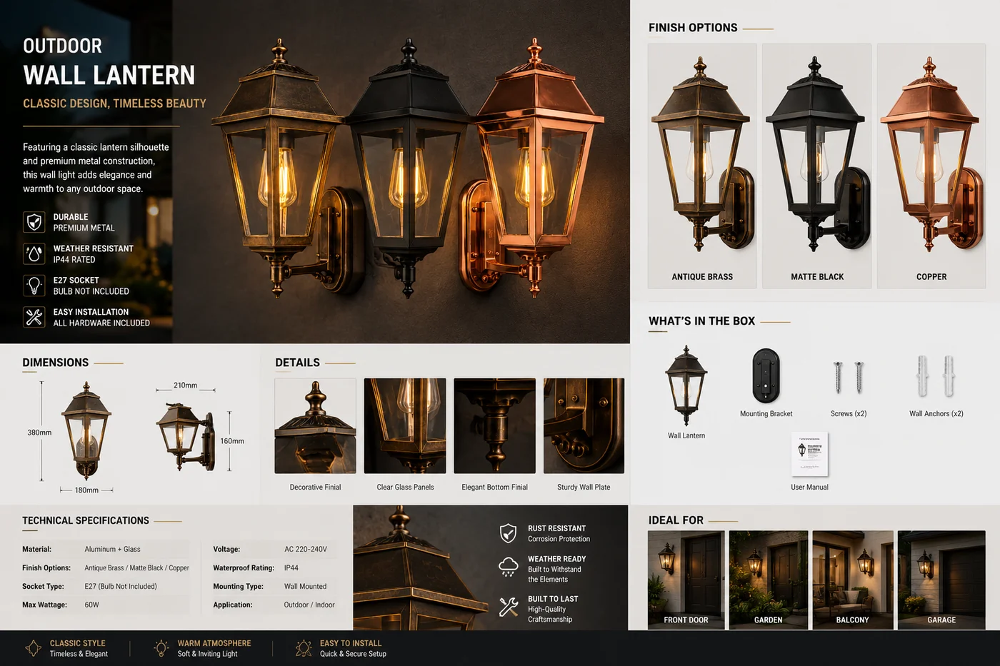

户外壁灯 · 太阳能 / 市电
用于庄园与酒店的经典装饰壁灯——提供太阳能(磷酸铁锂)与市电(E27)两种版本,IP44,青铜、黑、铜三色。

这是装饰系列的传统风格灯具,为想要传统灯笼轮廓与高端饰面的别墅、庄园和酒店而建。巧妙之处在于双版本阵容:同一款灯笼,太阳能或市电。经销商可用同一产品家族、同一组饰面,服务并网与离网客户、改造与新建项目。
规格参数
| 供电方式 | 太阳能(磷酸铁锂)或市电(E27 灯座) |
|---|---|
| IP 防护等级 | IP44——遮蔽户外使用 |
| 饰面 | 青铜 / 黑 / 铜 |
| 风格 | 古典灯笼,庄园与酒店 |
| 认证 | CE / EMC / LVD |
| 定制 | OEM / ODM——饰面、包装、品牌 |
为什么选它
太阳能或市电,一种设计。无需备两种不相关产品即可覆盖并网与离网客户。
高端饰面。青铜、黑、铜在别墅与酒店规格中显得上档次。
经典轮廓。传统灯笼造型,在现代灯具不契合建筑之处依然好卖。
已认证、支持 OEM。每份报价附 CE / EMC / LVD;可定制饰面与品牌。
为这些市场而建西班牙、中东、拉美和澳大利亚的庄园、别墅与酒店渠道——并网与离网场所通用的传统风格。